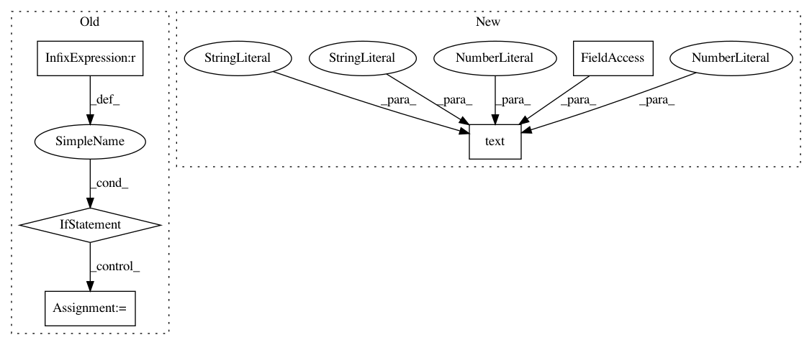

f0a81e2d218aa41b538de5e5cfebcc149f758dc5,examples/rbm_tutorial.py,BinomialRBM,fit,#BinomialRBM#Any#Any#Any#Any#Any#Any#Any#,239
Before Change
epoch_list.append(ep)
// Save fidelities at the end of training.
if ep == epochs:
print ("Finished training." )
ax = plt.axes()
ax.plot(epoch_list, fidelity_list, color="blue")
ax.grid()
ax.set_xlim(0,epochs)
ax.set_xlabel("Epochs")
ax.set_ylabel("Fidelity")
self.save_params()
print ("Saved weights and biases.")
break
for batch in batches:
all_grads = self.compute_batch_gradients(k, batch)
optimizer.zero_grad() // clear any cached gradients
After Change
//plt.ylabel("F",fontsize=20)
plt.xticks(fontsize=20)
plt.yticks(fontsize=20)
plt.gca().text(0.95, 0.2, "F = "+"{:.3}".format(fidelity_.item()),
verticalalignment="bottom", horizontalalignment="right",
color="k", fontsize=20,transform=plt.gca().transAxes)
//plt.pause(0.05)
display.clear_output(wait=True)
display.display(plt.gcf())
In pattern: SUPERPATTERN
Frequency: 3
Non-data size: 5
Instances
Project Name: PIQuIL/QuCumber
Commit Name: f0a81e2d218aa41b538de5e5cfebcc149f758dc5
Time: 2018-07-20
Author: gtorlai@uwaterloo.ca
File Name: examples/rbm_tutorial.py
Class Name: BinomialRBM
Method Name: fit
Project Name: matplotlib/matplotlib
Commit Name: ac964b5f85fcc3febb46074319c931704bd2a928
Time: 2017-12-28
Author: anntzer.lee@gmail.com
File Name: examples/userdemo/connectionstyle_demo.py
Class Name:
Method Name: demo_con_style
Project Name: matplotlib/matplotlib
Commit Name: 0ecb1bc2938adb1bef5da8855cb20df83003175d
Time: 2017-12-29
Author: jklymak@gmail.com
File Name: examples/userdemo/connectionstyle_demo.py
Class Name:
Method Name: demo_con_style